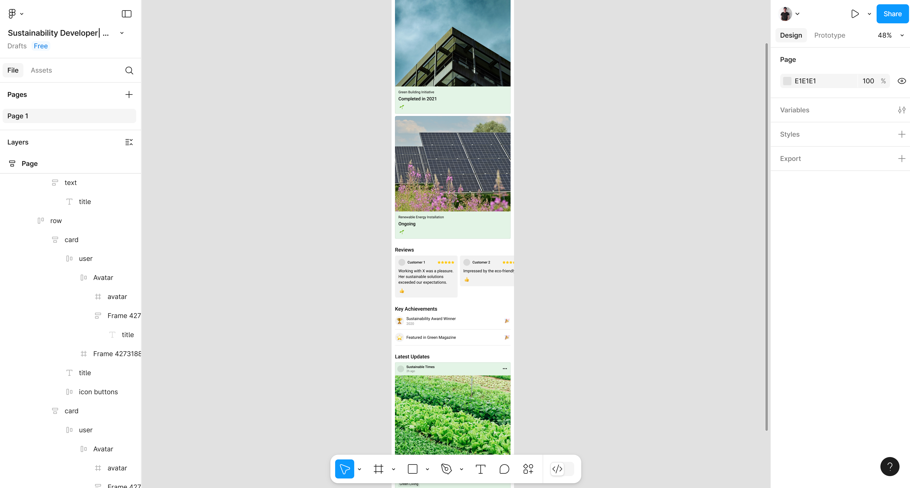
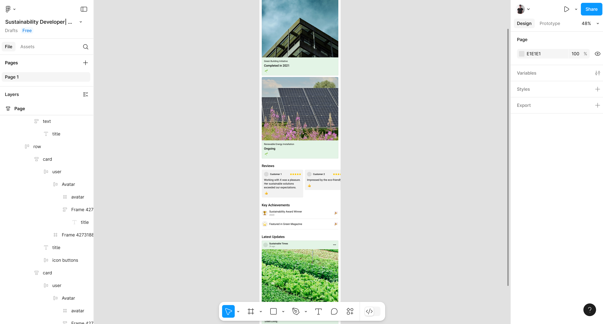

Sustainability Developer Portfolio
UX Design • UI Design
 

Overview
This project was created for a Sustainability Developer who needed a digital portfolio to showcase her consultancy work. The main challenge was to design a platform that would effectively communicate her expertise and the impact of her projects, making it easier for her to attract new clients. The solution was a clean, modern website that highlights her case studies, client testimonials, and unique approach to sustainability consulting.
Process
The design process began with personal inputs from the client and market research to understand her target audience and how similar professionals present their work. I then developed wireframes to map out the structure and user flow, ensuring the content was easy to navigate and focused on credibility. High-fidelity mockups followed, reflecting a modern and minimal design style aligned with sustainability values. Finally, I conducted usability testing to refine the experience and ensure clarity, responsiveness, and intuitive navigation across devices. This is where my Frontend Developer skills come into play.
Results
The final portfolio mockup effectively communicates the depth of her consultancy work in a clear and user-friendly way.